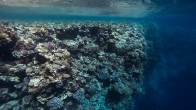
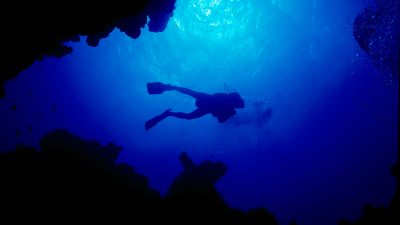
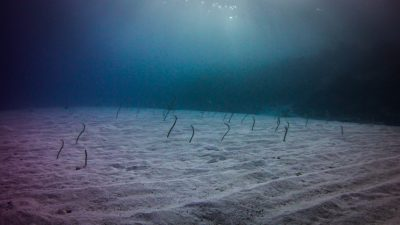
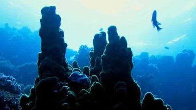
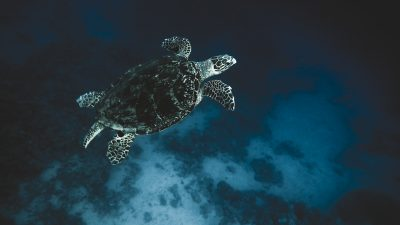
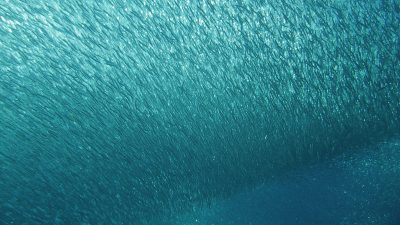

This is our dive sites for our clients this week, we hope to be good for you 💛
Blue Hole & BellsFamous in Dahab and all Red Sea diving, the Blue Hole is a hole in the reef table that drops to 90m then slopes to 300m before joining the open sea. You can dive it through the spectacular chimney entry at Bells then drift to Blue Hole or enter to the right or left of the Blue Hole. Once is never enough for these amazing wall dives. |
 |
The CanyonAnother of Dahab’s world class dive sites. A deep dive that takes you into a huge cavern under the sea bed. The light in the canyon is beautiful. You can even do a night dive during the full moon. Around the Canyon, there are also shallow dives at the Coral Garden to the right or drifting along Ricks Reef from a bit further north. You can also hover over the Canyon at 18m rather than dropping in, it’s still a beautiful dive. |
 |
Eel GardenNamed after the colony of eels that populates its sandy slopes. A gentle, shallow dive with schools of Barracuda and many hard and soft coral. Dive early morning for the best light and colour, or late afternoon when fish come in to feed. |
 |
The IslandsThree underwater coral islands, where you swim through corridors of color, teeming with fish life. Schools of Yellowtail Barracuda and Twinspot Snapper. Entry and exit is over a sacrificial path in the reef table, tricky in the wind and low tide. |
 |
Abu HelalAbu Helal means Bay of the Crescent Moon, and it’s one of our most beautiful and least dived sites. The best dive will take you to 38-39m (great for a Deep Diver course) towards a small canyon. Rolling hills of coralز |
 |
Gabr El BintGabr El Bint is a special location for us because its sites were discovered on Said’s 1st Camel Diving Safari. Dive Shabb Said, the stunning wall of giant Gorgonian fan corals, or the crack canyon to the South. There’s even a baby Blue Hole. |
 |